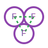

2. Character Creation
This document is the guide for "Session Zero." It contains everything a player needs to build a character from concept to completion.
2.1. Biography
Every character needs a biography first. This biography consists of two freeform fields: Appearance and History. These descriptions are crucial for defining a character's identity. Players should carefully consider their character's appearance and history when selecting skills and traits. The biography helps to ensure a character's mechanical representation aligns with their narrative concept.
2.1.1. Appearance
This field describes what a character looks like. It covers physical features, clothing, and any other visual characteristics. An appearance description can suggest certain skills or traits. For example, a character described as "exceptionally tall and gaunt" might have a high skill in Stealth or a trait representing Frail Constitution. A "heavily muscled individual with calloused hands" might have high Strength or a trait for Powerful Build.
2.1.2. History
This field outlines a character's past experiences and background. It can include significant life events, training, or personal struggles. A character's history directly informs their skill and trait selection. For example, a "former deep-space miner" might have high Piloting (Mining Vessels) or a trait for Claustrophobia. A "childhood spent studying ancient languages" could lead to high Linguistics or a trait for Bookish.
2.2. Character Points Pool
Now that your character has an appearance and backstory, it's time to choose skills and traits, which are the main mechanical features of a character in OpenAxiom. Yes, that's right: OpenAxiom does not have character attributes, races, or classes!
OpenAxiom uses a point-based character creation system for determining a character's starting skills and traits. Each player starts with a pool of character points, which represents the default human level of capability. The Game Master may adjust this pool up or down depending on the campaign's power level, typically ranging from 3-7 points, with 5 representing the average capabilities of an average human.
Character points can be spent in three ways:
- Increasing skills above the default value of 9 (costs 1 point per skill level above 9, unlike story points, which are used to upgrade characters after creation, and have an increasing cost curve)
- Purchasing positive traits (costs 1 point per trait level)
- Purchasing negative traits (gains 1 point per trait level)
Skills, positive traits, and negative traits all cost points at a 1:1 ratio, making them equally valuable in character creation.
Players can spend multiple character points on a single skill to increase it by more than one level. For example, a player could spend 3 points to increase a skill from 9 to 12, or 5 points to increase a skill from 9 to 14.
For example, a player with 5 character points could:
- Buy a skill at 14 (costs 5 points), using all 5 points
- Or buy a skill at 12 (costs 3 points) and a +2 positive trait (costs 2 points), using all 5 points
- Or buy a skill at 11 (costs 2 points), a +2 positive trait (costs 2 points), and a -3 negative trait (gains 3 points), for a total cost of 1 point, leaving 4 points remaining
- Or distribute points across many smaller improvements
Players may not reduce skills below the default value of 9 to gain additional character points. This prevents players from creating dump stats to gain an excessive number of character points.
Each chosen skill, positive trait, and negative trait must be justified by a one-sentence appeal to the character's Appearance and History sections. The Game Master must approve this justification.
2.3. Skills
A skill represents anything a character can do or be. This includes physical abilities like strength or swimming, and mental aptitudes such as various forms of intelligence. Skills are trainable, meaning a character's proficiency can improve over time. Skills have a name and a numerical value, indicating proficiency. Any skill not explicitly listed on a character's sheet has the default value of 9.
Skills in OpenAxiom range from 3 to 18, matching the possible range of a 3d6 roll. This range represents the full spectrum of human capability:
- 3: Hopeless - Virtually no chance of success
- 9: Average - Baseline human capability
- 18: Legendary - Automatic success under normal conditions
All skills start at the default value of 9. Players can increase skills above 9 using their character points, but cannot decrease skills below 9 to gain additional points.
Players may choose specific skills without choosing the more general version. For example, a character can have Piloting (Starship) without having Piloting. When a character has a specific skill but not its more general version, they can only use that specific skill for tasks that match it exactly. They cannot use it as a substitute for other specializations of the same general skill.
2.4. Trait Selection
During character creation, players may also use their character points pool to purchase positive and negative traits from lists provided by the Game Master. Traits represent inherent skills, talents, or aptitudes your character may have.
2.4.1. Trait Values
All traits are inherently either positive (a boost) or negative (a hindrance). However, traits do not have an inherent value by default.
Instead, players choose the value of each trait they want to take, and then spend or gain that many character points accordingly. For positive traits, the player chooses a value and spends that many character points from their pool. For negative traits, the player chooses a value and gains that many character points to their pool.
Each chosen trait must be justified by a one-sentence appeal to the character's Appearance and History sections. The Game Master must approve this justification.
2.4.2. Trait Categories
Traits are divided into four categories that determine how and when they apply:
- Broad Traits: Affect entire skill categories (like all Social skills) and represent fundamental aspects of your character.
- Narrow Traits: Affect specific skills (like just Art (Music)) and represent specialized talents or limitations.
- Situational Traits: Only apply under specific conditions (like in darkness or extreme cold) as determined by the GM.
- Special Traits: Add unique game rules beyond simple bonuses, such as special abilities or rerolls.
2.4.3. Skills Versus Traits
There are several important tradeoffs between skills and traits. The following table summarizes the key differences:
| Aspect | Skills | Traits |
|---|---|---|
| Improvement | Can change and improve over time | Static and cannot be improved |
| Maximum Value | Cap at 18 | Can stack on top of skills for a maximum of 23 |
| Scope | Affects only the specific skill | Can apply to many skills at once |
| Bonus Size | Can give a much larger bonus in particular skills (up to +9) | Capped at +5 per trait |
| Special Effects | Simple numerical bonuses | Can introduce new rules and special abilities |
| Negative Effects | None | Can impose penalties or limitations |
Moreover, while positive skill improvement can overcome negative traits to a certain degree, skill values cap out eventually, meaning that characters with negative traits will not only start out with a disadvantage, but also eventually fall behind those without such traits who can reach the full cap without a negative modifier. This means that negative traits create a permanent disadvantage that becomes more pronounced at the extremes of character development. Therefore, it is recommended to work with negative traits, not against them.
For example, a character with a trait that applies a -5 penalty to Mental (Reasoning) can spend all their available character points (5 CP gained from the negative trait + the 5 starting CP) to .increase that skill to the maximum possible value of 18 (costing 9 of their 10 available points), but it will effectively be only 13 thanks to the negative trait, whereas a character with no such disability can reach 18, and a character with a relevant positive trait can reach 23. Therefore, while spending some skill points on that skill, to get it back up to a reasonable level to compensate for the negative trait, makes sense, spending all 10 skill points was a waste of time for the character. Those points could have been more effectively spent elsewhere.
2.4.4. Traits and Lore Items
Some traits may come with associated lore items that a character must carry with them as a result of having that trait. These items are typically Small or Medium in size and don't confer mechanical advantages beyond what the trait itself provides. For example, a character with the Photographic Memory trait might carry a cybernetic implant, or a character with Night Vision might have special eye drops or wear tinted glasses. These items are considered part of the character's backstory and serve to reinforce the narrative justification for the trait.
Lore items associated with traits are automatically provided to characters during character creation and do not count against their inventory slot limits. However, they can be lost or damaged during play, potentially affecting the character's ability to use their trait effectively until the item is replaced.
2.5. Item Selection
During character creation, characters start with all items required by their skills, plus any worldbuilding or lore items they want, as long as those don't confer a mechanical advantage.
Your best strength-related skill determines the number of inventory slots you have available to carry items. Strength-related skills include Physical (Strength), Physical (Endurance), and any other skills that the Game Master deems appropriate for determining carrying capacity.
Items are categorized into four size classes that determine how they consume inventory slots:
- Small (S): These items can be fit two per inventory slot (e.g., a dagger, a book, a small tool).
- Medium (M): These items require one inventory slot (e.g., a sword, a backpack, a rope).
- Large (L): These items require two inventory slots (e.g., a suit of armor, a large weapon, a chest).
- Extra Large (XL): These items require multiple players to carry, with each participant using all of their open slots for the duration (e.g., a canoe, a large piece of furniture, a heavy statue).
This information helps you understand how many items your character can realistically carry when selecting starting equipment.
2.6. Factions

During character creation, players should consider which faction their character primarily identifies with, consulting with their Game Master to determine what factions are available in the game's setting and which would be reasonable for a player in the planned campaign to be a part of. This faction represents their background, cultural upbringing, or primary affiliation.
This choice helps inform the character's background and can suggest appropriate skills and traits. For example, a character from a scholarly faction might have high Languages or Investigation skills, while one from a criminal faction might excel in Social (Deception) or Physical (Stealth).
Players should consult with their Game Master to determine what factions are appropriate for the story and setting. The GM may have specific factions in mind for the campaign, or may allow players to propose their own.
Characters start with a reputation score of 3 with their chosen primary home faction, representing their familiarity and standing within their own community. As the character encounters members of other factions during play, their reputation with those factions will be tracked separately, starting at 0 for neutral first encounters.
The Game Master should use the expanded faction relationship system where initial reputation with new factions is determined by the character's existing relationships. See the Social Relations chapter for details on this core rule.